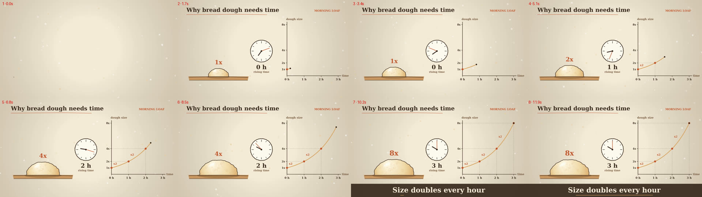

alexgreensh/anidoodle
Animation test, 2026-11-18 · Code art & math animation (Manim) · driven by Claude Code (Claude Opus 5.5) in a throwaway sandbox
The brief: A 12-second explainer: dough doubles every hour, with a clock and a growing curve beside it, ending on "Size doubles every hour". Full brief →
What was checked
- ✓ dough doubles
- ✓ clock
- ✓ curve
- ✓ curve is exponential
- ✓ closing line
The recording: 1920 x 1080, 30.0 fps, 12.0 s. Judge (gpt-6-astra, 8 frames): follows the brief 5/5, looks 5/5.
Time 7.2 min (installing the tool included) · 32 turns · $0.97 at API prices · files: loaf.html, loaf/assets/brand/lantern/brand.json, loaf/assets/brand/lantern/brand.ts, loaf/assets/brand/lantern/lanternMark.svg, loaf/assets/fonts/InstrumentSans-Bold.ttf, loaf/assets/fonts/InstrumentSans-OFL.txt, loaf/assets/fonts/InstrumentSans-Regular.ttf, loaf/assets/fonts/Lora-Bold.ttf, loaf/assets/fonts/Lora-OFL.txt, loaf/assets/fonts/PROVENANCE.md, loaf/assets/fonts/Poppins-Bold.ttf, loaf/assets/fonts/Poppins-OFL.txt
The 8 frames the judge saw

The agent's last words
ed its bundled Lora font, so the text uses the system font DejaVu Serif. - **Sound:** the film is silent. You said not to ask questions, and the skill requires asking before writing a score. Files are in `~/work/output/`: - `loaf/src/canvas-core/loaf.ts` — the source, in the skill's project format - `loaf.html` — a self-contained player that works offline - `preview.mp4` - `preview.mp4.film.json` — a sidecar file the render step writes next to the video DELIVERABLE: /home/runner/work/output/loaf/src/canvas-core/loaf.ts, /home/runner/work/output/loaf.html, /home/runner/work/output/preview.mp4